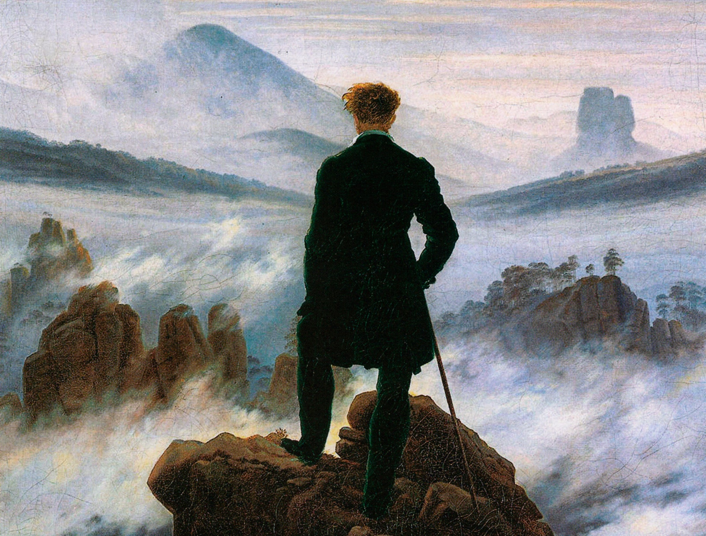
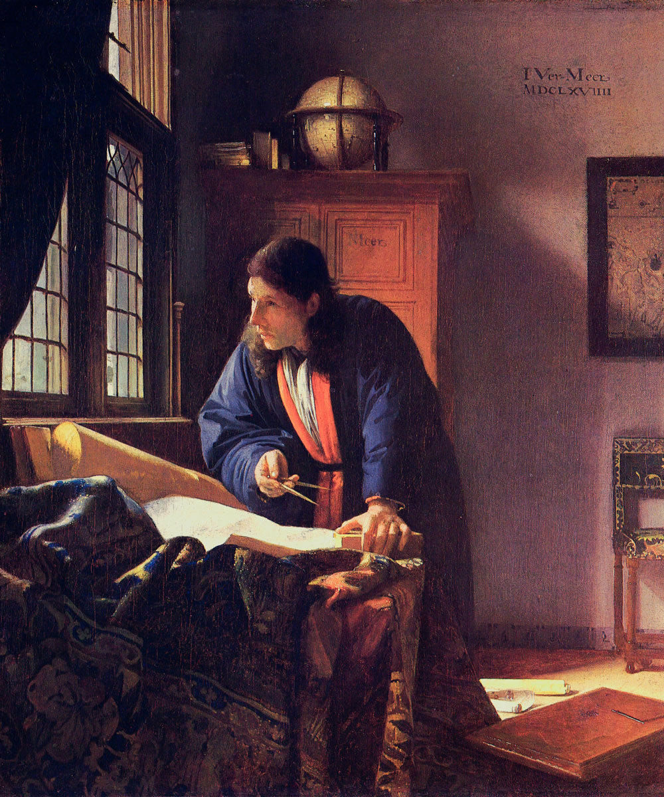
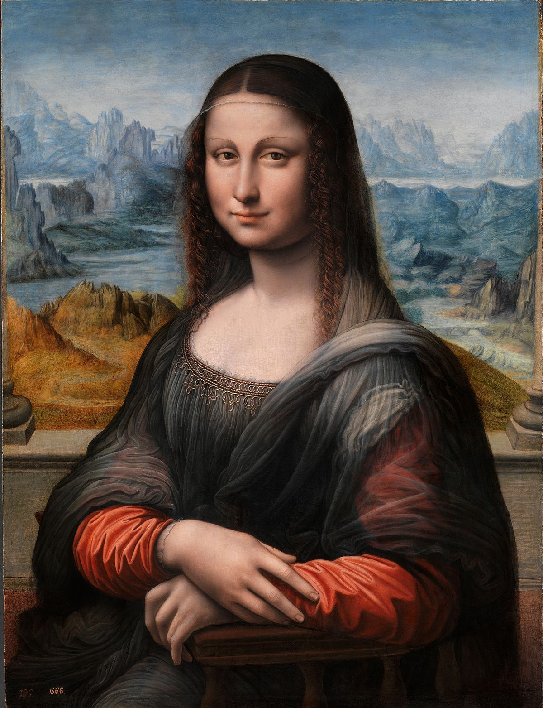

Obras Mas Reconocidas




La última cena es una pintura mural original de Leonardo da Vinci
ejecutada entre 1495 y 1498.Declarado Patrimonio de la Humanidad por
la Unesco en 1980. La pintura fue elaborada para su patrón, el duque
Ludovico Sforza de Milán. No es un fresco tradicional, sino un mural
ejecutado al temple y óleo sobre dos capas de preparación de yeso
extendidas sobre enlucido. Mide 460 cm de alto por 880 cm de ancho.En
su versión de la última cena, Leonardo quiso mostrar el momento exacto
de la reacción de los discípulos cuando Jesús anuncia la traición de
uno de los presentes. La conmoción se hace notar en la pintura gracias
al dinamismo de los personajes que, en lugar de permanecer inertes,
reaccionan enérgicamente ante el anuncio.
Mas recientes
Para comprar cualquiera de las obras porfavor llamenos al siguiente numero o por mail para concretar una entrevista

Para comprar cualquiera de las obras porfavor llamenos al siguiente numero o por mail para concretar una entrevista 1170323732